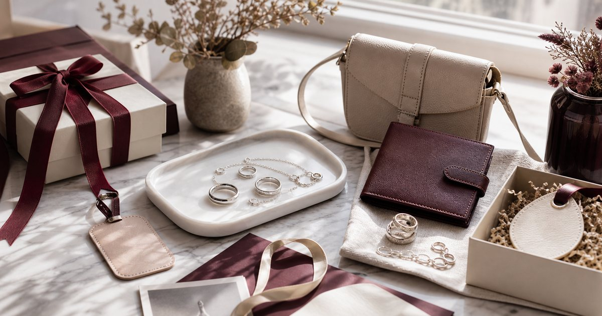

Elite Fashion｜飾品與皮件送禮：戒指、銀飾、皮夾、小包與日常配件怎麼選
飾品與皮件送禮要先判斷關係距離、尺寸風險與日常使用率。戒指、銀飾、皮夾、小包和客製小物各自適合不同場合。

先判斷尺寸風險：戒指最高，小皮件最低
飾品送禮最大的風險是尺寸和風格。戒指很有紀念感，但尺寸風險高；小皮件、鑰匙圈或小包則更容易日常使用。
可以把 ART64、玖伍 jewelry、Mister 手作皮件、S′AIME、KANGOL 與 LamiFans 放在同一個場合裡比較，但不要只看外型。編輯部會先看版型、重量、材質、收納、是否能和既有衣物搭配，以及它在上班、旅行或週末之間能不能轉換。
比較穩妥的順序是先確認 是否知道尺寸、對方是否常戴飾品。常見失誤是 想送驚喜戒指，卻完全不知道尺寸；在 生日、紀念日、同事禮與客戶小禮 裡，能被反覆穿用、容易保養、場合感清楚的品項，比一次買很多更實際。
- 不知道尺寸時，先避開戒指。
- 小皮件和小包較適合正式關係。
銀飾和原創飾品要看對方風格
銀飾、耳環、項鍊或原創設計飾品很看個人風格。送禮前先觀察對方平常戴什麼顏色、尺寸和材質。
可以把 ART64、玖伍 jewelry、S′AIME 與 KANGOL 放在同一個場合裡比較，但不要只看外型。編輯部會先看版型、重量、材質、收納、是否能和既有衣物搭配，以及它在上班、旅行或週末之間能不能轉換。
比較穩妥的順序是先確認 對方平常是否戴銀色、金色、簡約或亮眼款。常見失誤是 用自己的審美替對方決定全部；在 伴侶、朋友生日與穿搭型禮物 裡，能被反覆穿用、容易保養、場合感清楚的品項，比一次買很多更實際。
- 風格越鮮明，越需要熟悉對方。
- 日常款比舞台感強的款式更好送。
皮夾和小皮件要看使用習慣
皮夾、卡夾、鑰匙包或手作小物，重點是對方是否真的會替換現有物件。材質、容量和開合方式都會影響使用率。
可以把 Mister 手作皮件、LamiFans、S′AIME 與 KANGOL 放在同一個場合裡比較，但不要只看外型。編輯部會先看版型、重量、材質、收納、是否能和既有衣物搭配，以及它在上班、旅行或週末之間能不能轉換。
比較穩妥的順序是先確認 對方使用現金、卡片和鑰匙的方式。常見失誤是 只看皮革質感，沒有看容量和尺寸；在 上班族、旅行者與喜歡小物的人 裡，能被反覆穿用、容易保養、場合感清楚的品項，比一次買很多更實際。
- 皮件容量比外觀更早決定使用率。
- 客製字樣要克制，避免影響日常使用。
小包送禮要避開過度個人化
小包比大包容易送，但仍要看顏色、容量、背法和對方身高比例。正式關係選低調色，熟人可以更有設計感。
可以把 S′AIME、KANGOL、UD LAB 與 Mister 手作皮件 放在同一個場合裡比較，但不要只看外型。編輯部會先看版型、重量、材質、收納、是否能和既有衣物搭配，以及它在上班、旅行或週末之間能不能轉換。
比較穩妥的順序是先確認 手機、卡片和鑰匙是否放得下。常見失誤是 送了漂亮但容量不合的包，對方很少使用；在 通勤、旅行、週末聚會與生日禮 裡，能被反覆穿用、容易保養、場合感清楚的品項，比一次買很多更實際。
- 小包先用手機尺寸測。
- 低調色更適合不熟的收禮者。
客製細節是加分，不是主角
客製禮物容易有心意，但不要讓字樣、日期或圖案搶過物件本身。越日常的物件，越適合簡潔客製。
可以把 LamiFans、Mister 手作皮件、ART64 與玖伍 jewelry 放在同一個場合裡比較，但不要只看外型。編輯部會先看版型、重量、材質、收納、是否能和既有衣物搭配，以及它在上班、旅行或週末之間能不能轉換。
比較穩妥的順序是先確認 客製內容是否簡潔、是否影響對方日常使用。常見失誤是 字樣太大，讓禮物只能收藏不能使用；在 企業禮贈、團隊紀念與親友重要節點 裡，能被反覆穿用、容易保養、場合感清楚的品項，比一次買很多更實際。
- 客製內容越短越耐看。
- 先選物件，再決定客製。
最穩的組合：一個主禮，一個小配件
飾品和皮件送禮不需要堆滿。選一個主禮，例如小皮件或銀飾，再搭一個小配件或卡片，就能保持完整又不過量。
可以把 ART64、玖伍 jewelry、Mister 手作皮件、S′AIME、KANGOL 與 LamiFans 放在同一個場合裡比較，但不要只看外型。編輯部會先看版型、重量、材質、收納、是否能和既有衣物搭配，以及它在上班、旅行或週末之間能不能轉換。
比較穩妥的順序是先確認 主禮是否明確、配件是否真的有用。常見失誤是 每個品項都想放，最後禮物沒有焦點；在 生日、升遷、節慶與商務感謝 裡，能被反覆穿用、容易保養、場合感清楚的品項，比一次買很多更實際。
- 主禮一件就好，配件負責補氣氛。
- 不確定風格時，選低調可日常使用的物件。
FAQ
不知道尺寸可以送戒指嗎？
不建議。戒指尺寸風險高，不確定時可改選項鍊、耳環、小皮件或小包。
皮件客製要注意什麼？
字樣越簡潔越耐看，且不應影響日常使用。先選好物件，再決定客製位置。
小包送禮容易失手嗎？
要看容量、顏色和背法。先確認手機、卡片和鑰匙能否放下，低調色通常更穩。
下一步建議
如果你正在挑飾品或皮件禮物，可以先用尺寸風險、使用率和關係距離來篩選。
重要警語
本文為一般飾品、皮件與送禮情境整理，不構成尺寸判斷、材質鑑定或個別產品測試。飾品與皮件請依商品頁資訊、尺寸與個人需求選擇。
本文含品牌／商品導購連結；若你透過部分商品連結前往選購，Elite Fashion 可能取得合作收益。本文仍以編輯判斷與使用情境整理為主，價格、規格、活動與庫存請以商品頁公告為準。